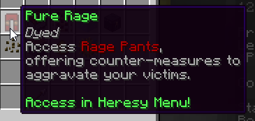

| The Pit 1.0.2 | |
| The Pit 1.0.1 - Rage Pants | |
|  | |
| A screenshot of the new Pure Rage upgrade. | |
| Release Date | Dec 16th, 2020 |
|---|---|
| Forums Approval*Forums approval is based on the number of positive reactions on the update's forum post divided by the number of total reactions. Reactions only count if they were added in the first month of the post being up. | 26.4% |
| Forums Author | Minikloon |
| ← Fixes — No-Rage Patch → | |
Note: As the prior update is also referred to as "The Pit 1.0.1", and the following update is referred to as "The Pit 1.0.3", it is assumed that this update was named in error and that it was intended to be referred to as "The Pit 1.0.2". This article is kept as such for indexing purposes.
The Pit 1.0.2 was a minor version of the Hypixel Pit. It introduced the Pure Rage renown upgrade and Rage Pants, along with some balance changes.
The Pure Rage upgrade was purchaseable for 35 renown at Prestige IX. It allowed users to craft Rage Pants for 17 Chunk of Vile. When enchanted in the Mystic Well to tier I, Rage Pants gain 1-2 tokens of a random Rage enchantment, after which they can be upgraded to further tiers, following the same enchanting process as normal mystic pants. A pair of Rage Pants is required for the sacrifice when upgrading to tier III. Rage enchantments are typically designed to counter some aspect of a typical player's items or perk loadout.
Rage enchantments included in this update include:
Note: RARE! Deal with the Devil was removed from the pool of possible enchantments almost immediately.
Balance changes: